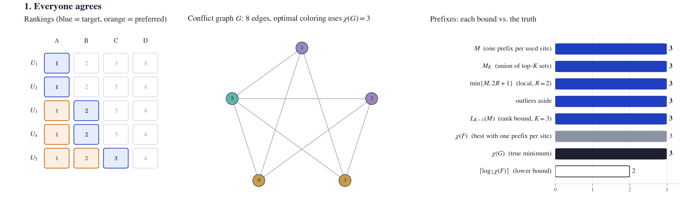
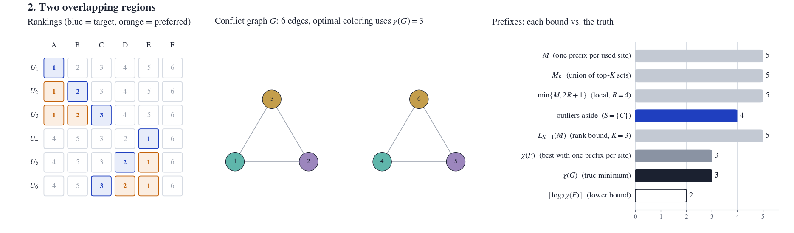
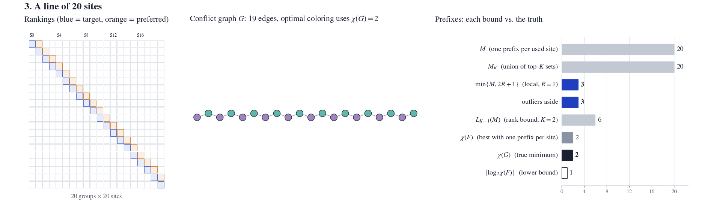
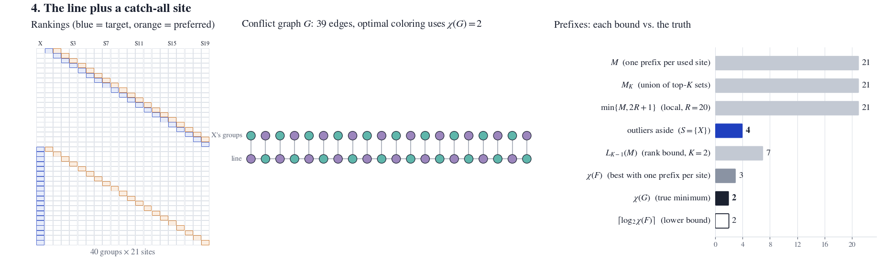
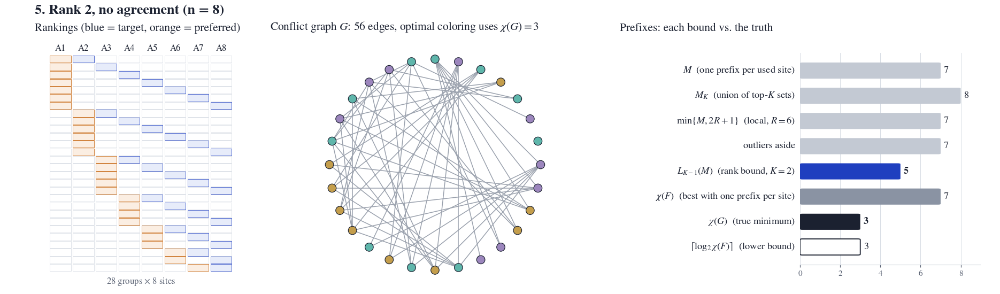
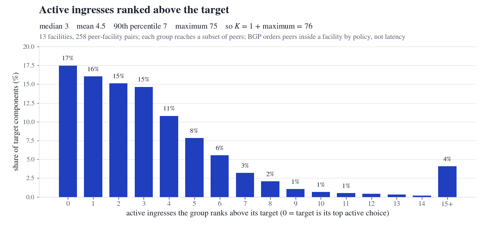

COMPASS decides which ingress each group of users should enter the network through, as if it could route every group directly. In practice it can only steer traffic with BGP prefixes: a prefix is announced at some set of ingresses, and each user then takes its favourite ingress among those. This page collects what we can prove about the fewest prefixes needed to reproduce an intended assignment exactly. Each result comes with a short animation that walks through its proof.
The setting
Ingress
A place where traffic enters the network, such as a site or a peering point. Written \(A, B, C, \dots\)
User group
Users that are routed together, written \(U\). Each group ranks the ingresses in a strict order of preference that does not depend on the prefix. \(B \succ_U A\) means \(U\) prefers \(B\) to \(A\).
Target
The ingress COMPASS wants a group to use. An intended pair \((U, A)\) is called an assignment. In the animations a 2 marks a target and a 1 marks an ingress the group likes better.
Prefix
Each assignment is placed on one prefix. A group whose traffic is split across several targets contributes one assignment per target, and these may sit on different prefixes; this assumes the group can be steered more finely than BGP's single route per prefix, for example through DNS. A prefix is announced at the targets of all assignments placed on it, and nowhere else. Every group then goes to the announcing ingress it ranks highest.
Conflict
Assignments \((U, A)\) and \((U', B)\) conflict if \(U\) prefers \(B\) to \(A\), or \(U'\) prefers \(A\) to \(B\). On a shared prefix both \(A\) and \(B\) are announced, so one of the groups would leave its target. Two assignments with the same target never conflict.
Conflict graph \(G\)
One vertex per assignment, one edge per conflict.
Coloring, \(\chi(G)\)
Give every vertex a color so that no edge joins two vertices of the same color. One color is one prefix. \(\chi(G)\), the chromatic number, is the fewest colors that work.
Rank \(K\)
At most \(K - 1\) of the ingresses COMPASS uses are ranked above any group's target. \(K = 2\) means each group prefers at most one used ingress to its target. Ingresses nobody is assigned to never count, since they never announce. The global results use \(\bar K\) instead, the rank among all ingresses.
\(M\)
The number of different ingresses used as targets. One prefix per used ingress always works, so \(\chi(G) \le M\).
Results at a glance
"Exact" gives the precise number of prefixes. "Upper bound" means at most this many prefixes are needed; the true number can be smaller. "Lower bound" shows how many prefixes some instances need.
One prefix per used ingress always works, so \(M\) is an upper bound in every case. The results come in two kinds. Global agreement (identical rankings, shared top-\(\bar K\) sets) never beats \(M\): it explains why \(M\) itself is small, \(M \le K\) or \(M \le M_{\bar K}\), because the groups' preferences leave few ingresses to target. Local agreement (few competitors per ingress) is what can go below \(M\): an assignment may use hundreds of ingresses, and \(2R + 1\) or \(2K - 1\) prefixes still suffice when each ingress has few competitors.
Paper: Lemma 1exact
Fewest prefixes = fewest colors
A way of placing assignments on prefixes keeps every group on its target exactly when no prefix holds two conflicting assignments. So the fewest prefixes needed is \(\chi(G)\).
Why
A group leaves its target only if its prefix is also announced at an ingress it prefers. That ingress is announced because another assignment on the same prefix targets it, and that is exactly a conflict edge.
In the animation
Four groups, three ingresses, with full rankings. A 2-prefix plan with no conflict inside a prefix is checked group by group: each one lands on its target. Then two conflicting assignments are forced onto one prefix, and one group is redirected.
Takeaway
Counting prefixes is counting colors. Every other result on this page is a statement about \(\chi(G)\).
Paper: Figure 3
Building the conflict graph from a ranking grid
Ingresses \(A_1, \dots, A_5\). For every pair \(i < j\) there is one group \(U_{ij}\) that ranks \(A_i\) first and is assigned its second choice \(A_j\). Its assignment is the vertex \((i, j)\).
How to read the grid
Rows are groups, columns are ingresses. An orange 1 and a blue 2 in the same column mean one group prefers the ingress another group targets, so their two vertices are joined. Going column by column builds every edge.
In the animation
Blue cells turn into vertices, one worked example shows a shared prefix failing, and each column adds its edges. The finished graph has no triangle but contains a cycle of length 5, and an odd cycle cannot be colored with 2 colors.
Takeaway
Every group gets its second choice, yet 3 prefixes are needed.
Paper: Theorem 2lower bound
Rank alone cannot bound the number of prefixes
For every \(n \ge 2\), the grid above extended to \(n\) ingresses gives an instance where every group gets its second choice (\(K = 2\)), yet \(\chi(G_n) = \lceil \log_2 n \rceil\). So no bound on the number of prefixes can depend on \(K\) alone.
Why
Take any plan with \(c\) prefixes and let \(C_j\) be the set of prefixes announced at ingress \(A_j\). Group \(U_{ij}\) prefers \(A_i\), so its prefix must be announced at \(A_j\) but not at \(A_i\). Hence \(C_i \ne C_j\) for every pair: all \(n\) ingresses have different announcement patterns. With \(c\) prefixes there are only \(2^c\) on/off patterns, so \(n \le 2^c\). That many prefixes also suffice: write \(i - 1\) and \(j - 1\) in binary and put \(U_{ij}\) on the prefix numbered by the lowest bit where \(i - 1\) has a 0 and \(j - 1\) has a 1. The animation shows the lower bound.
In the animation
The claim, a three-step plan, one worked pair, all ten pairs for \(n = 5\), and then the count: 2 prefixes give 4 patterns for 5 ingresses, which is too few.
Takeaway
With every group at rank 2, the prefix count still grows like \(\log_2 n\). It never grows faster than about \(\log_2 M\): see Rank plus size.
Paper: Proposition 3exactupper bound
Identical rankings, then a shared top-\(\bar K\) set
If every group ranks the ingresses in the same order and every target has rank at most \(K\), then \(\chi(G) = M \le K\).
If the groups only share the same set of top \(\bar K\) ingresses among all ingresses, in any order, then \(\chi(G) \le M \le \bar K\), and fewer prefixes may suffice.
Why
Every target lies in the shared top \(K\), so at most \(K\) ingresses are used: \(M \le K\).
One prefix per used ingress always works: \(\chi(G) \le M\).
With one common order, the group at the lower-ranked of two used ingresses always prefers the higher one. Every pair conflicts, so \(M\) prefixes are needed.
With different orders, some pairs stop conflicting and that last step fails.
In the animation
Part 1 proves the identical case on six groups with \(K = 3\). Part 2 reorders two groups, shows that the top-3 set stays the same while the order changes, and checks each pair of ingresses to see which conflicts disappear. Here 2 prefixes suffice instead of 3.
Takeaway
A shared top-\(\bar K\) set keeps the upper bound; only a shared order makes it exact.
Paper: §5, global agreementupper bound
Several top-\(\bar K\) sets: count their union
Rank here counts all ingresses (\(\bar K\)). Sort the groups by their set of top \(\bar K\) ingresses, giving \(\tau\) sets \(T_1, \dots, T_\tau\), and let \(M_{\bar K} = |T_1 \cup \dots \cup T_\tau|\). Then \(\chi(G) \le M \le M_{\bar K} \le \tau \bar K\). For two sets that share \(m\) ingresses, \(\chi(G) \le 2\bar K - m\).
Why
This is the shared-set argument applied to each block of groups. Each target is in its own group's top-\(\bar K\) set, so every used ingress is in the union, and one prefix per used ingress works. Two sets of size \(K\) sharing \(m\) ingresses cover \(2\bar K - m\) ingresses.
In the animation
Every group has its own order; only the top-3 sets are shared within a block. The two blocks still conflict through the ingress they share, and the best coloring uses 2 prefixes against an upper bound of 5. Then the second set slides over the first and the grid updates at each overlap \(m = 0, 1, 2, 3\).
Takeaway
The upper bound counts distinct top-\(\bar K\) ingresses; the true need can be much smaller.
Paper: Theorem 4upper bound
Few competitors per ingress, few prefixes
For a used ingress \(A\), let \(H(A)\) be the used ingresses that at least one group assigned to \(A\) prefers to \(A\). If \(|H(A)| \le R\) for every used ingress, then \(\chi(G) \le \min\{M, 2R + 1\}\).
What \(H(A)\) means
It is the list of ingresses that must not announce \(A\)'s prefix, or some of \(A\)'s groups would leave. \(R\) bounds how many competitors any ingress has.
Why
Merge all assignments with the same target into one vertex per ingress. Coloring this ingress graph \(F\) gives a valid plan, so \(\chi(G) \le \chi(F)\).
Draw an arrow \(A \to B\) when \(B \in H(A)\). Every ingress has at most \(R\) outgoing arrows.
Charge each conflict to the ingress whose groups would defect. Any set \(X\) of ingresses then holds at most \(R|X|\) conflicts, so some ingress in \(X\) has at most \(2R\).
Remove such an ingress, repeat, then add the ingresses back in reverse. Each returning ingress sees at most \(2R\) colors already used by its neighbours, so one of \(2R + 1\) is free.
In the animation
It opens by merging the group-level graph into the ingress graph, then runs the three steps on a 7-ingress example. Near the end it notes that \(F\) can need more colors than \(G\), and shows how agreement among an ingress's groups turns the rank \(K\) into a bound on \(R\).
Takeaway
The upper bound grows with local competition \(R\), not with the number of ingresses \(M\).
Paper: Corollary 5upper bound
Agreement at each ingress gives \(2K - 1\)
If every target has rank at most \(K\), and the groups assigned to each ingress agree on which ingresses rank above it (order aside), then \(\chi(G) \le \min\{M, 2K - 1\}\).
If, at each ingress, the groups add at most \(\Delta\) ingresses beyond one reference group's set, then \(\chi(G) \le \min\{M, 2K + 2\Delta - 1\}\).
Why
With agreement, \(H(A)\) is one shared set of at most \(K - 1\) ingresses, so the previous result applies with \(R = K - 1\). Each extra ingress a group adds grows \(H(A)\) by one, giving \(R \le K - 1 + \Delta\). A related case: if every ranking extends one common order whose ties have at most \(w\) ingresses, the ingresses above \(A\) number at most \(K - 1\) and ties add at most \(w - 1\), so \(\chi(G) \le \min\{M, 2K + 2w - 3\}\). With no ties (\(w = 1\)) this is \(2K - 1\) again.
In the animation
Two groups at the same ingress order the same set differently. Across ingresses the preferences go round in a cycle, so no global ranking exists. Finally one group breaks agreement and the bound moves to \(2K + 2\Delta - 1\).
Takeaway
Agreement within each ingress is what makes a bound in \(K\) possible. The grid of the "rank alone fails" section has none: each group at \(A_j\) prefers a different ingress.
Paper: Corollary 6upper bound
Set the outliers aside
For any set \(S\) of used ingresses, let \(R_S = \max_{A \notin S} |H(A) \setminus S|\): the longest competitor list among the other ingresses, ignoring \(S\). Then \(\chi(G) \le |S| + 2R_S + 1\).
Any \(S\) works, so \(\chi(G) \le \min\{M,\ \min_S (|S| + 2R_S + 1)\}\). Taking \(S\) empty gives back the local-competition bound.
Why
\(R\) is a maximum over all ingresses, so one ingress whose users are scattered, such as a catch-all site, can make \(2R + 1\) useless even when every other ingress has few competitors.
Give each ingress in \(S\) a prefix that no other ingress announces. No conflict involving \(S\) can then sit inside one prefix.
Among the remaining ingresses every competitor list has at most \(R_S\) entries, so the peel-and-rebuild argument colors them with \(2R_S + 1\) more prefixes.
In the animation
Seven ingresses form a ring where each one's users prefer the next. A catch-all ingress \(X\) has seven user groups, each preferring a different ring ingress, so \(R = 7\) and the local-competition bound gives only 8. With \(X\) on its own prefix, \(R_S = 1\) and the ring needs 3, for a total of 4. That is exact for one prefix per ingress, because \(X\) conflicts with every ring ingress.
Setting aside a popular ingress, one that appears in many competitor lists, saves at most one prefix. The gain comes from ingresses whose own users disagree.
Takeaway
A few ingresses with scattered users cost one prefix each, not a blown-up bound for everyone.
Paper: Proposition 7range
One prefix per ingress is at most exponentially worse
For every instance, \(\lceil \log_2 \chi(F) \rceil \le \chi(G) \le \chi(F)\), where \(\chi(F)\) is the fewest prefixes when all groups at an ingress share one prefix.
Why
Take the best plan and give each ingress the set of prefixes it announces. If two ingresses conflict, some group at one of them prefers the other. That group's prefix is announced at its own ingress but cannot be announced at the one it prefers. So conflicting ingresses announce different sets, which is a coloring of the ingress graph with at most \(2^{\chi(G)}\) colors.
What it means
Splitting an ingress's groups across prefixes can save a lot, but never more than an exponential: the plan with one prefix per ingress needs at most \(2^{\chi(G)}\) prefixes. The animation is the rank-alone video: its announcement-set argument is this proof on one instance.
Takeaway
Both ends can be reached: identical rankings give \(\chi(G) = \chi(F)\), and the shift instance gives \(\chi(G) \approx \log_2 \chi(F)\).
Paper: Theorem 8upper bound
Rank plus the number of ingresses: a logarithmic bound
If every target has rank at most \(K\), then \(\chi(G) \le L_{K-1}(M)\): the shortest length of \(M\) codes, sets of prefixes, in which no code is covered by \(K - 1\) others.
For \(K = 2\) this is the least \(L\) with \(\binom{L}{\lfloor L/2 \rfloor} \ge M\), about \(\log_2 M\). In general it is \(O(K^2 \log M)\).
Why
Give each used ingress a code: the set of prefixes it may announce.
A group ranks at most \(K - 1\) ingresses above its target, and no code is covered by \(K - 1\) others. So some prefix in its target's code is announced by none of the ingresses it prefers: put the group there.
Every group on a prefix then sees only its target and ingresses it likes less, so nobody moves.
In the animation
Six ingresses where every pair conflicts, so one prefix per ingress needs 6. Codes of 2 out of 4 prefixes suffice, giving 4. The truth is 3, matching the flattening lower bound \(\lceil \log_2 6 \rceil\).
Unlike the agreement bounds, this one lets the groups at one ingress use different prefixes.
Takeaway
Rank alone cannot bound the prefix count, but rank and size together cap it at about \(\log_2 M\) for second choices, and some instances need \(\lceil \log_2 n \rceil\). So logarithmic growth is the right answer.
Worked examples: how to read the bounds
Five small scenarios, each built from explicit rankings. For each one the table gives the parameters, every upper bound, and the true answer. \(\chi(F)\) is the fewest prefixes when all groups at an ingress share one prefix; \(\chi(G)\) is the true minimum. Green marks the best upper bound in each row; the last column is the lower bound from the flattening sandwich. All values were computed exactly, not estimated.
Scenario
Groups
\(K\)
\(M\)
\(M_{\bar K}\)
\(R\)
\(\min\{M, 2R+1\}\)
Outliers aside
Rank bound \(L_{K-1}(M)\)
\(\chi(F)\)
\(\chi(G)\)
Lower \(\lceil \log_2 \chi(F) \rceil\)
1. Everyone agrees
5
3
3
3
2
3
3
3
3
3
2
2. Two overlapping regions
6
3
5
5
4
5
4, \(S=\{C\}\)
5
3
3
2
3. A line of 20 sites
20
2
20
20
1
3
3
6
2
2
1
4. The line plus a catch-all site
40
2
21
21
20
21
4, \(S=\{X\}\)
7
3
2
2
5. Rank 2, no agreement
28
2
7
8
6
7
7
5
7
3
3
1. Everyone agrees

The situation. Four sites; every user group ranks them \(A \succ B \succ C \succ D\). Capacity pushes some groups off \(A\): two go to \(A\), two to \(B\), one to \(C\).
How to read it. With one shared order, the group at the lower-ranked of any two used sites prefers the higher one, so every pair of sites conflicts. Nothing can beat \(M\), and \(M\) is at most \(K\): here \(\chi(G) = M = K = 3\), exactly as the identical-rankings result says.
2. Two overlapping regions

The situation. Region 1 ranks \(A \succ B \succ C\), region 2 ranks \(E \succ D \succ C\). Each region sends one group to each of its top three sites, so both regions use \(C\).
How to read it. The global view counts the union of top-3 sets: \(2K - m = 6 - 1 = 5\). The local view sees that \(C\) is contested from both sides, \(|H(C)| = 4\), which keeps \(2R + 1\) at 9. Setting \(C\) aside brings the bound to 4. The true need is 3, because conflicts stay inside each region.
3. A line of 20 sites

The situation. Twenty sites along a line. The users at each site rank the next site east first, then their own site, so every target has rank at most 2.
How to read it. Global bounds see 20 used sites and stop there: \(M = M_{\bar K} = 20\). Locally each site has a single competitor, \(R = 1\), so 3 prefixes suffice whatever the length. The true answer is 2, since alternate sites can share a prefix. Only the local bound notices that the network is long but simple.
4. The line plus a catch-all site

The situation. The same 20 sites, plus a site \(X\) that absorbs overflow from everywhere: its 20 user groups each prefer a different site of the line.
How to read it. One site with scattered users pushes \(R\) to 20, and the local bound collapses to \(M = 21\). Setting \(X\) aside restores it: \(1 + 2 \cdot 1 + 1 = 4\). With one prefix per site 3 are needed, and if \(X\)'s groups may use different prefixes, 2 suffice.
5. Rank 2, no agreement

The situation. The shift instance with 8 sites: for every pair \(i < j\), one group ranks \(A_i\) first and is assigned \(A_j\). Every group gets its second choice.
How to read it. The groups at each site all prefer different sites, so \(R = 6\) and every agreement-based bound stays at 7. Even one prefix per site needs all 7, because every pair of sites conflicts. The rank bound uses only \(K = 2\) and \(M = 7\) and gives 5, the only upper bound below 7. The true answer is 3, exactly the lower bound \(\lceil \log_2 \chi(F) \rceil = \lceil \log_2 7 \rceil\): only splitting a site's groups across prefixes gets there.
Rule of thumb: global agreement explains why few sites are used, local agreement explains why many sites can still share prefixes, and a few outlier sites are best given their own prefix. When none of these hold, as in example 5, the rank bound still caps the count at about \(\log_2 M\), and \(\lceil \log_2 \chi(F) \rceil\) says how low it can go.
What does \(K\) look like in practice?
The bounds only care about ingresses that are actually used. So the useful measure for a target is how many active ingresses its group ranks above it, the quantity the COMPASS submission reports (median 3, mean 4.3, 90th percentile 5 on the measured deployment). The figure models how that distribution arises.
Deployment
The submission's 13 facilities (Amsterdam, Bangalore, Frankfurt, Johannesburg, London, Miami, Mumbai, New York, Paris, São Paulo, Singapore, Sydney, Tokyo) with 258 peer–facility pairs, about 20 peers per facility.
Reachability
Each user group reaches only some peers, its upstreams and peers: about a quarter of them (\(\rho = 0.28\)). An unreachable peer can neither carry the group nor pull it away.
COMPASS target
The latency-minimizing assignment over the reachable pairs, under uneven per-link capacities (a linear program; groups may be split).
BGP preference
Facilities are ordered by latency with a little noise. Peers inside one facility have the same latency, so BGP orders them by policy instead. A small share of groups (4%) are transit-routed: their provider's routing ignores where the facilities are, so their facility order is unrelated to latency.
Count
For each piece of the target, the number of active pairs the group can reach and ranks above it, counted per piece as in the submission.

What the figure shows
A typical target has about 3 active ingresses ahead of it. Most of them are other peers at the same facility: BGP orders those by policy, so COMPASS's chosen peer usually sits in the middle of the peers the group can reach there. The model gives median 3, mean 4.5 and 90th percentile 7, against the submission's 3, 4.3 and 5.
A small tail sets the maximum. About 4% of target pieces have 15 or more active ingresses ahead of them, almost all from transit-routed groups. The maximum is 75, so \(K\) taken as a maximum would be 76.
What it means for the bounds. The results above only need the active ingresses ranked above each target, so \(K\) should be read as 1 plus that count, not a rank among all ingresses. Applied with the maximum, the bounds are pessimistic. A group placed alone on its own prefix can never conflict, so \(\chi(G) \le s + \chi(G')\), where the \(s\) tail pieces are set aside and \(G'\) is the rest; the bounds then apply with the bulk's value, for example \(K = 8\) for 90% of pieces.
What the model leaves out
Real AS-level topology, correlation between nearby groups' routes, and the exact peer counts per facility. The model reproduces the submission's median and mean closely but spreads its middle a little wider (90th percentile 7 against 5), so the body of the distribution is the robust part; the exact tail is not.
How to read these
The small examples were built to illustrate each argument; they are not measurements. Their conflicts and chromatic numbers were checked by brute force.
Every coloring drawn on a graph is the best possible for that graph. Simpler valid plans, such as one prefix per ingress, appear only as text.
Apart from the coloring result and the identical-rankings case, the guarantees are upper bounds. The rank bound colors \(G\) directly. The local-competition, local-agreement and outlier bounds apply to plans that put all of an ingress's groups on one prefix, which can use more prefixes than \(\chi(G)\).
Everything assumes the prefix model in "The setting": strict rankings that do not depend on the prefix, each prefix announced exactly where its assignments need it, and groups split across several targets can be steered onto different prefixes.